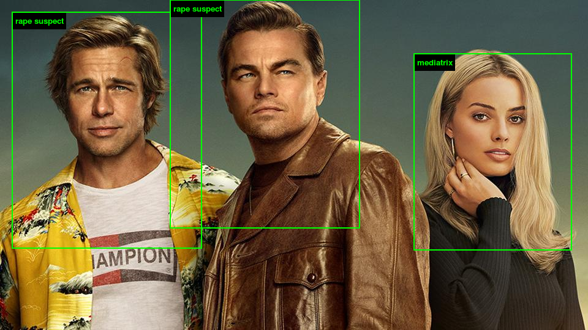

ImageNet Roulette is web application that uses AI to categorize images of people, using pre-existing stereotypes that live on the web and media. The article “‘Nerd,’ ‘Nonsmoker,’ ‘Wrongdoer’: How Might A.I. Label You?” talks about these biases we have of people based off their race and gender that are expressed through ImageNet Roulette. When I used one of my pictures with me and my friends, we got pretty bland and tame results like “nonsmoker”, “psycholinguist”, and “testatrix”. I tried other pictures with different friends, and pretty much got the same results each time. My friends are predominantly female and asian like I am, so based off stereotypes and news from the media, our race and gender are portrayed as “quiet” and “nice”. However, when I tried a picture of the main cast of “Once Upon a Time in Hollywood”, I got pretty drastic results. Both Leonardo Dicaprio and Brad Pitt were labeled as “rape suspects”.

It was quite shocking to see how after millions of data and analysis of faces across the internet, this web application would label two of the most well-known actors in America with such horrific labels. It’s funny because I’d think that Artificial Intelligence would be unbiased since it learns without the help of humans, however, it’s quite the opposite. It learns through preexisting information that was already influenced and built by humans, so if anything AI represents the epitome of human biases as seen in ImageNet Roulette. Women and asians are stereotyped as nice and peaceful, while caucasian and black males are seen as more violent power seekers. Everybody has stereotypes of each other, and I’m no exception. Since my friends and I all got labeled similarly in this app, it shows that I tend to gravitate towards people who look and have similar vibes as me. We try to break our views on stereotypes, but it’s hard to do so when mass media constantly uses and portrays these stereotypes on a regular basis, just as it’s shown in ImageNet Roulette.